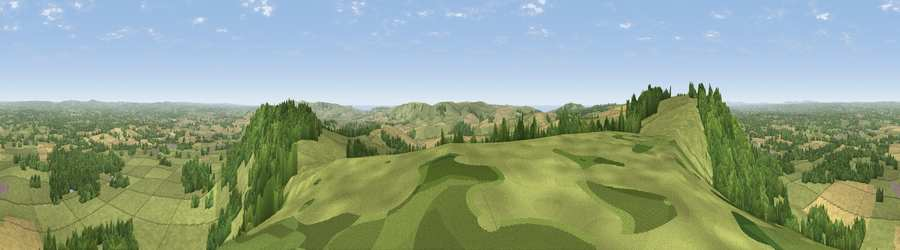

Viewpoint near Plumpton
#854 in England · top 5% of its area beats it · near PlumptonThe view, rendered

A 360° render of this exact spot computed from the terrain model, tree cover and land cover — summer colours, afternoon light, calibrated against photographs of famous viewpoints. Real trees, hedges and buildings will differ in detail.
The panorama
Grey silhouette: terrain skyline in each direction (720 bearings, Earth curvature and refraction included). Dashed green: skyline with trees (+15 m) and buildings (+8 m) as obstacles. Blue strip: how far the ground is visible on each bearing.
Where the view opens
Wedge length = distance to the farthest visible ground on that bearing (vegetation-aware). Rings at 10, 25 and 50 km.
What fills the view
56% grassland · 29% woodland · 14% cropland ·
Angular shares of the visible panorama (visual magnitude), not map area. Landscape diversity 0.44 (0–1 Shannon).
Key numbers
More beautiful places nearby
The staircase of upgrades: each row has a higher view potential than everything closer. Driving times are estimates from straight-line distance, calibrated against real road routing — check an actual route before setting out.
| Place | Direction | Drive | Score |
|---|---|---|---|
| Viewpoint near Westmeston | W · 3 km | ~6 min | 80.9 |
| Ditchling Beacon | W · 4 km | ~10 min | 81.8 |
| Viewpoint near Firle | SE · 11 km | ~20 min | 83.8 |
| Viewpoint near Firle | SE · 12 km | ~23 min | 85.4 |
| Firle Beacon | ESE · 13 km | ~24 min | 88.9 |
| Viewpoint near Niton | WSW · 95 km | ~119 min | 89.2 |
| Viewpoint near West Bexington | W · 184 km | ~204 min | 89.5 |
| The Knoll | W · 185 km | ~205 min | 91.0 |
50.89586, -0.04725 · source: screening · position refined by local search. Computed location — check access rights before visiting.